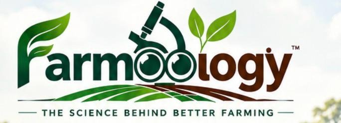

Festive Offer 🌿
Tap to Claim Offer

The Science Behind Better Farming
Science-driven diagnostics and regenerative agriculture expertise led by Dr. Perli Himavarsha, Ph.D. & Dr. Gummadala Kasirao, Ph.D. — transforming Indian agriculture one farm at a time.
Real Data. Right Advice. Better Results.
Science-based solutions for healthy, productive and sustainable farms across India
Comprehensive analysis of pH, EC, N-P-K, Organic Carbon, micronutrients, soil texture and cation exchange capacity with detailed crop-wise nutrient recommendations.
Microscopic examination of leaves, roots and soil samples for early identification of pests, diseases, and beneficial organisms before major losses occur.
Season-wise nutrient and spraying schedules tailored for each crop and soil type, integrating Jeevamrit, Panchagavya and other organic inputs.
Accurate testing of fruits, vegetables and food products for harmful pesticide residues — ensuring food safety, export compliance and organic certification support.
Hands-on training for farmers, FPOs, NGOs and institutions on organic farming, sustainable agriculture and climate-resilient farming systems across India.
We cultivate and supply premium millets grown using 100% organic practices — rich in nutrition, gentle on the planet, and direct from field to your table.
Rich in calcium and iron. Excellent for bone health and diabetes management.
High protein energy grain. Drought-resistant and perfect for arid regions.
Versatile and water-efficient with high fibre content. Great for digestion.
Low glycemic index — ideal for diabetics. Rich in dietary fibre and minerals.
Little Millet, Kodo Millet, Barnyard Millet and other traditional grains.
From soil to harvest — a simple, thorough, science-driven journey
On-site visit or sample collection from your farm with precise geo-tagging and field documentation.
Thorough 16-parameter soil analysis plus microscopy for pathogens and beneficial organisms.
Comprehensive crop-specific report with actionable organic recommendations and input schedules.
Ongoing support, seasonal follow-ups and WhatsApp consultations to ensure implementation success.
We combine rigorous science with genuine farmer-first values to deliver solutions that work in the real world — your field, your crops, your livelihood.
Start TodayLab-certified testing with evidence-based interpretations and crop-specific guidance.
Ph.D. agronomist with 50+ peer-reviewed publications and pan-India training impact.
Flexible — we visit your farm or you send samples. Full support either way.
Every recommendation prioritizes soil health, ecology and long-term farm vitality.
Serving individual farmers, FPOs, corporate farms and NGOs with equal commitment.
Solutions designed for climate adaptation, livelihood security and sustainable futures.
Led by Ph.D. Agronomists bridging groundbreaking soil diagnostics, organic farming, regenerative agriculture, and farmer-centric innovation.
Co-Founder & CEO, Farmoology | Ph.D. in Agronomy
Dr. Perli Himavarsha is the Co-Founder & CEO of Farmoology and a Ph.D. Agronomist specializing in Soil Health, Nutrient Management, Organic Farming, Cropping Systems and Regenerative Agriculture.
With experience spanning research, academia, field implementation and agricultural entrepreneurship, she works at the intersection of science, technology and farmers, developing practical solutions for sustainable and climate-resilient agriculture.
She has contributed to 50+ research publications and technical articles, with expertise in organic and integrated nutrient management, crop nutrition, bio-inputs, soil fertility, intercropping and sustainable farming systems.
Dr. Himavarsha has also mentored women-led agricultural enterprises and agri-startups, supporting the development of innovative and commercially viable solutions for the agricultural sector.
Her innovation portfolio includes a patent/design filing for a Soil Fertility Analysing Smart Device, aimed at making farm diagnostics more accessible and actionable for farmers. She is a two-time Ideathon winner, recipient of the Young Agronomist Award 2023, and has been recognized with a Global Excellence Award associated with NITI Aayog & CI-MSMU.
At Farmoology, she leads the technical and strategic vision, bringing together agronomy, soil science, technology and entrepreneurship to build science-backed, farmer-centric solutions that improve productivity, profitability and long-term farm sustainability.
Founder, Farmoology | Ph.D. in Agronomy
Dr. Kasirao holds a Ph.D. in Agronomy with deep specialization in organic farming and sustainable agriculture. His research is rooted in soil–plant–microbe interactions, agroecology, organic nutrient management, cover crops, mulching and sustainable farming systems.
He has personally trained more than 10,000 farmers, professionals and institutions across India on organic and sustainable agriculture practices, and has served as technical consultant for several NGOs on capacity-building initiatives.
Currently focused on sustainability in agriculture, livelihoods and climate-resilient farming systems. Author of 50+ research publications in peer-reviewed agricultural journals.
Partner with Farmoology for a healthier, more productive tomorrow. We respond within 24 hours.
Research Profiles